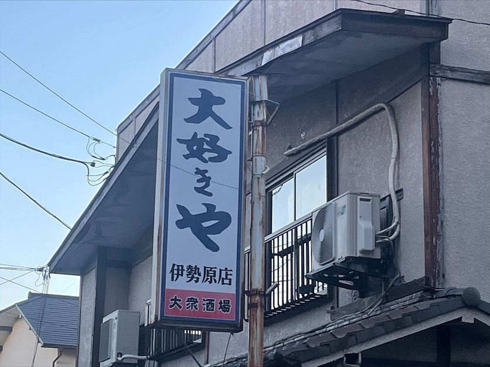
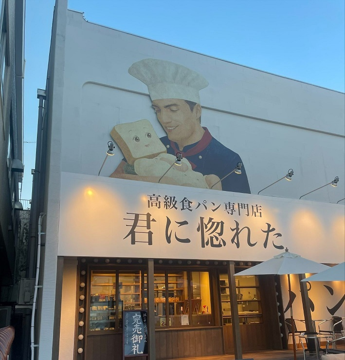
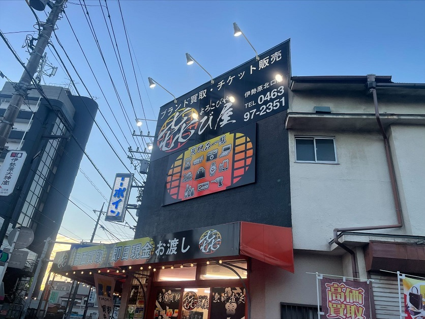

＊居酒屋の看板
この写真は私が伊勢原市の駅前の居酒屋でとった写真です。
このお店の看板は「大好きや」というのがキャッチフレーズになっています。とにかく飲み放題や食べ放題が安く、
メニューも充実していることから人が集まりやすく、みんなに愛されるようなお店です。
また、白と青という見やすい色使いだったり、シンプルなデザインがとても見やすいことが分かります。
縦書きの看板にすることで、誰もが目に入りやすいように工夫して付けられていると考えました。

＊パン屋の看板
これは、私が伊勢原の有名なパン屋さんの看板の写真です。
このビジュアルのコンセプトは、「惚れてしまうほど心を込めて作ったわが子(食パン君)を抱きかかえながらおいしいパンになるように見守り、
笑顔あふれるお店へ成長していきたい」という想いが込められています。

＊ものを買い取るお店の看板
この写真も、伊勢原の交差点で私が撮ったものです。
看板に書いてある文字は、よろこびやと読みます。初めて見た時は、読み方が分からずどのようなお店か想像が付きませんでした。
㐂び屋（よろこびや）とは、、、
お客様の思い出も含めて、大切にしてこられたお品物を気持ち良く手放すお手伝いのことを表しています。
独特な世界感あるデザインがとても目立ちます。
デザイン演習Ⅰ・Ⅱトップページ